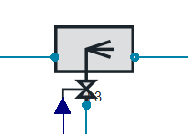
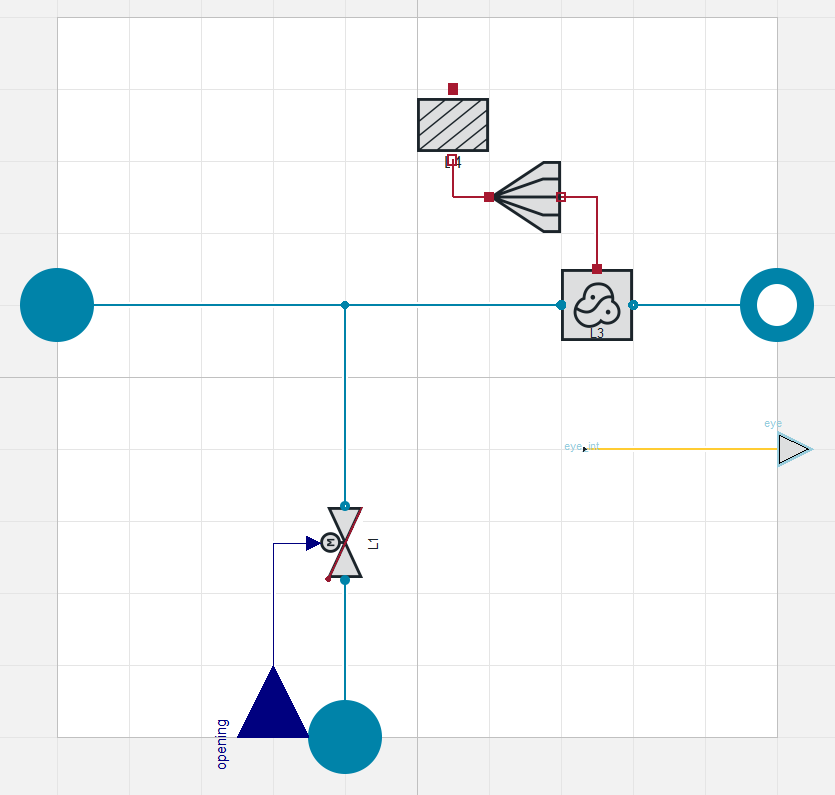

SprayInjectorVLE L3 advanced
Created Wednesday 12 June 2013
A spray injector model featuring the dynamic cooling of steam by a valve-operated injection of water.
1. Purpose of Model

This model is recommended for all situations where a spray injector is needed and detailed information on the behaviour of the two phases in the outlet zone is needed.
2. Level of Detail, Physical Effects Considered and Physical Insight
2.1 Level of Detail
Referring to Brunnemann et al. [1], his model refers to the level of detail L3.
2.2 Physical Effects Considered
- dynamic conservation of energy (neglecting kinetic energy terms) in mixing zone and outflow zone
- dynamic conservation of mass (neglecting kinetic energy terms) in mixing zone and outflow zone
- separate balancing of the two phases in the outflow zone
- pressure losses due to friction in outflow zone and valve
- conductive heat transfer from the outflow zone to the wall component
- thermal storage of wall mass
2.3 Level of Insight
Pressure Loss
valve:
- Linear|Nominal operation point | subcritical flow VolumesValvesFittings:Valves:Fundamentals:LinearNominalPoint
- Quadratic|Kv definition | supercritical flow | compressible |EN60534 Valves:Fundamentals:Quadratic EN60534 compressible
- Quadratic|Kv definition | supercritical flow | incompressible |EN60534 VolumesValvesFittings:Valves:Fundamentals:Quadratic EN60534 incompressible
- Quadratic|zeta definition | supercritical flow VolumesValvesFittings:Valves:Fundamentals:QuadraticFlowFunction
- Quadratic|Kv definition | subcritical flow VolumesValvesFittings:Valves:Fundamentals:QuadraticKvs
- Quadratic|Nominal operation point | subcritical flow VolumesValvesFittings:Valves:Fundamentals:QuadraticNominalPoint
- Quadratic|zeta definition | subcritical flow condition VolumesValvesFittings:Valves:Fundamentals:QuadraticZeta
outflowZone:
- NoFriction : friction free flow between inlet and outlet Basics:ControlVolumes:Fundamentals:PressureLoss:Generic PL:NoFriction L2
- LinearPressureLoss : Linear pressure loss based on nominal values Basics:ControlVolumes:Fundamentals:PressureLoss:Generic PL:LinearPressureLoss L2
- QuadraticNominalPoint: Based on nominal values Basics:ControlVolumes:Fundamentals:PressureLoss:Generic PL:QuadraticNominalPoint L2
- PressureLossCoefficient: User defined PLC, density dependend Basics:ControlVolumes:Fundamentals:PressureLoss:VLE PL:PressureLossCoefficient L2
- QuadraticNominalPoint: Based on nominal values, density dependend Basics:ControlVolumes:Fundamentals:PressureLoss:VLE PL:QuadraticNominalPoint L2
Heat Transfer
outflowZone:
- Ideal Heat Transfer : All Geo || Ideal Heat Transfer
Phase Separation
outflowZone:
- Real mixing: outlet states depending on volume fractions Basics:ControlVolumes:Fundamentals:SpatialDistributionAspects:RealMixed
3. Limits of Validity
- negligible increase of flow velocities
- spatial extension component is small compared to the unit it belongs to
4. Interfaces
4.1 Physical Connectors
- MainInlet, SprayInlet, outlet1 connectors combined for:
- Mass flow rate in the connection ports [kg/s].
- Thermodynamic pressure in the connection ports [Pa].
- Specific thermodynamic enthalpy close to the connection port s [J/kg].
- Medium properties at the ports.
- Wall connectors for
4.2 Summaries
Summaries are available for
- outflowZone
- valve
4.3 Inputs
- Real Input value for the position of the valve opening.
4.4 Medium Models
- Fluid Medium Models in sub components
- outflowZone
- valve
- Solid Medium Model in sub component
- wall
5. Nomenclature
See the nomenclature of the sub components
- outflowZone
- valve
- wall
6. Governing Equations
6.1 System Description and General model approach
This model consists of the 3 subcomponents outflowZone, valve and wall which are connected as shown in the sketch below.

7. Remarks for Usage
- if large changes in density may occur within short time in mixingZone set preciseTwoPhase to true
- if chattering in the mass flow rate via the valve occurs set the expert setting useStabilisedMassFlow to true, thus creating a pseudo state for the mass flow rate
- use the expert setting opening_leak_ to enhance simulation speed and numerical stability, as the injector injects water (according to the chosen value for opening_leak_) even with fully closed valve. Mind that the simulation result is manipulated!
- access additional summary information by setting showExpertSummary to true
- create a connector for a cross-shaped visualiser by setting showData to true
- if large changes in density may occur within short time in mixingZone set preciseTwoPhase to true
8. Validation
9. References
[1] Johannes Brunnemann and Friedrich Gottelt, Kai Wellner, Ala Renz, André Thüring, Volker Röder, Christoph Hasenbein, Christian Schulze, Gerhard Schmitz, Jörg Eiden: "Status of ClaRaCCS: Modelling and Simulation of Coal-Fired Power Plants with CO2 capture", 9th Modelica Conference, Munich, Germany, 2012
10. Authorship and Copyright Statement for original (initial) Contribution
Author:
DYNCAP/DYNSTART development team, Copyright 2011 - 2022.
Remarks:
This component was developed during DYNCAP/DYNSTART projects.
Acknowledgements:
ClaRa originated from the collaborative research projects DYNCAP and DYNSTART. Both research projects were supported by the German Federal Ministry for Economic Affairs and Energy (FKZ 03ET2009 and FKZ 03ET7060).
CLA:
The author(s) have agreed to ClaRa CLA, version 1.0. See https://claralib.com/pdf/CLA.pdf
By agreeing to ClaRa CLA, version 1.0 the author has granted the ClaRa development team a permanent right to use and modify his initial contribution as well as to publish it or its modified versions under the 3-clause BSD License.
11. Version History
- 2015-11-24- v1.1 - initial implementation - Timm Hoppe XRG Simulation